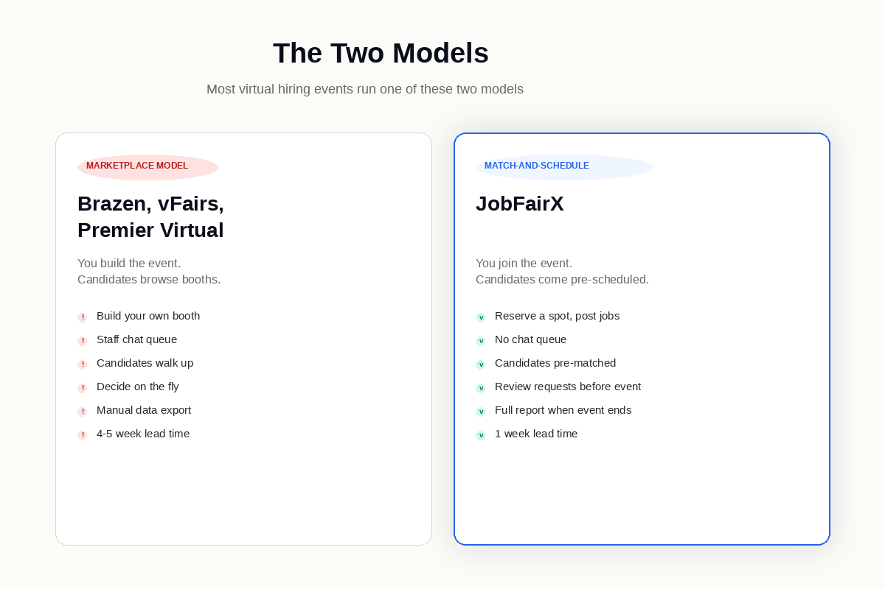
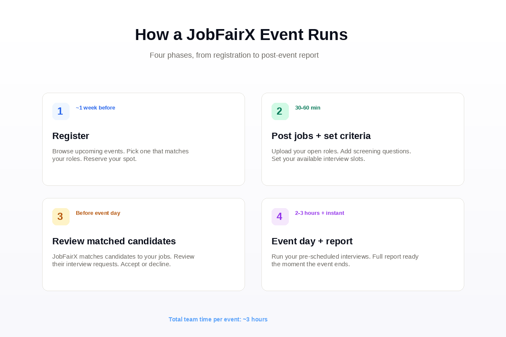

How Does a Virtual Job Fair Work? An Employer's Guide
A walkthrough of how virtual hiring events run on JobFairX — pre-matched candidates, scheduled interviews, and a full event report the moment the event ends.
A virtual job fair is a scheduled online recruiting event where employers and pre-registered candidates meet over a fixed time window. But that simple definition hides something important: there are actually two very different ways virtual job fairs run, and most "how it works" articles describe the wrong one.
The version most articles describe — booths, browsing, chat windows, walk-up conversations — is one model. JobFairX runs a different one.
You don't build a virtual hiring event on JobFairX. You join one. We host the event, pre-qualify the candidates, and your calendar arrives full of scheduled interviews you've already approved.
This guide covers both models so you know which one you're actually buying when you register. Then it walks through the JobFairX flow step by step — what setup looks like, what happens on event day, and what you walk away with.
What Is a Virtual Job Fair?
A virtual job fair is a scheduled online recruiting event where multiple employers connect with candidates over a defined time window, usually two to four hours. The terms "virtual job fair," "virtual career fair," and "virtual hiring event" are used interchangeably. The format is the same. The framing differs depending on who's reading.
Unlike a job board where applications sit in a queue for weeks, a virtual job fair compresses sourcing, screening, and first-round interviews into a single concentrated session. For employers hiring multiple people in similar roles, that compression is where the value lives.
For the broader picture — what virtual hiring events are strategically, what they cost, when to use them, how to measure ROI — see our complete guide to virtual hiring events. This post is focused specifically on the mechanics.
The Two Models, and Why It Matters Which One You Choose

Virtual job fair platforms split into two camps. They market the same product. They deliver very different experiences. Choosing the wrong model for your hiring use case is the single most expensive mistake employers make in this category.
The Marketplace Model — Brazen, vFairs, Premier Virtual
You build your own event, or rent booth space at one. Your team configures a branded employer page. Candidates browse those pages on event day, drop into your chat window, and either book a video interview or request one. Conversations happen ad-hoc within the event window.
What this means for your team: You staff the booth for the full two-to-four hour event. You answer chat from anyone who walks up. You manage a queue. You hope candidates schedule the right interviews. You handle the data export afterward.
Best for: Custom-branded enterprise events, employer brand showcases, organizations with the bandwidth to run live event operations.
The Match-and-Schedule Model — JobFairX
You register for an event JobFairX already hosts. You post your open jobs and set your interview criteria. JobFairX matches qualified candidates from our network to your roles. Matched candidates request interviews with you, going through any screening questions you've set. You review the requests and accept or decline — all before event day.
By the time the event starts, your calendar is already full of scheduled interviews with candidates you've reviewed and approved. You log in, interview, make decisions, and walk away with the full post-event report ready the moment the event ends.
What this means for your team: No booth to staff. No chat queue to manage. No browsing. Just the interviews you said yes to.
Best for: Employers who want concentrated interview time without the operational overhead of running a booth.
The rest of this guide covers the JobFairX flow specifically. If the marketplace model is what you need, our platform comparison breaks down the leading options.
How a JobFairX Hiring Event Actually Runs

Phase 1: Register for the event — about one week before
You browse upcoming events on the JobFairX calendar. We host events every week, rotating themes across cities and industries — Healthcare, Technology, Veterans, Diversity, Entry-Level. You pick the one that fits the roles you're filling and reserve your spot.
Lead time is one week. That's the runway we need to advertise your jobs to our candidate network before event day.
Phase 2: Post your jobs and set your interview settings
Once you've reserved, you upload your open jobs and define:
- The roles you want matched candidates for
- Your screening questions (optional, but recommended — they save time downstream)
- Your available interview slots on event day
- Whether you want to auto-accept candidate requests or review each one manually
This is the only part of the process that requires real time from your team. Most employers finish setup in 30 to 60 minutes for their first event. Subsequent events take 15 to 20 minutes — your jobs, screening questions, and templates are already in the system.
Phase 3: Review and accept matched candidates — happens before event day
This is where the match-and-schedule model shows up.
JobFairX matches candidates from our network to your specific jobs based on role fit, location, and your screening criteria. Matched candidates request interviews with you. Each request comes with the candidate's resume, screening answers, and a proposed interview slot.
You review each request and accept or decline. Accepted candidates get a confirmed scheduled slot. Declined candidates are notified. If they fit another role you've posted, they often re-apply to that one instead.
By the day before the event, your calendar is locked in. No queue to manage. No browsing. Just scheduled interviews with candidates you've already reviewed and approved.
Phase 4: Event day and the instant post-event report
On event day, your team logs into the JobFairX lobby. The lobby is your command center for the day. You see your full interview calendar, the candidates waiting for their slot, and which interviewer is on which conversation.
Each interview runs as a scheduled video session, typically 15 to 30 minutes depending on what you set. Between interviews, your team marks each candidate Yes, No, or Maybe in real time. The notes and dispositions get logged as you go.
The moment the event ends, your full event report is ready. Candidate feedback, dispositions, notes, resumes, contact info, and analytics — all in one dashboard, ready to export to your ATS or hand to the hiring manager.
Most events run two to three hours. Most teams walk out with a five-to-fifteen-person shortlist depending on volume and how the candidate pool turned out.
What Candidates Experience
The candidate-side experience shapes who shows up and how prepared they are. Worth understanding so you know what your interview pool actually looks like.
A candidate finds the JobFairX event through our calendar, our partners, or a paid promotion campaign. They register with their resume. We match them to your specific open roles based on their profile.
If they're interested in a matched role, they request an interview. They answer any screening questions you've set. Then they wait for your response. If you accept, they get a scheduled slot. If you decline, they look at the other matched roles.
By the time they show up to your interview, they've already:
- Confirmed they want the role
- Answered your screening questions
- Locked a specific time slot
- Read your job description
That's a higher commitment threshold than a job board applicant who clicks "Apply." It's also why JobFairX events average an 84% interview show rate. Candidates who scheduled the slot generally show up for it.
What Customers Actually Do With It
Here's the operational reality of running this:
Target ran an entry-level hiring event with JobFairX. The team conducted 92 interviews in one event and extended 19 hires. "This was our second event," their Senior Recruiter said. "The pre-scheduled interview times kept everything moving. We've already registered for the next one."
Tesla ran three Veterans hiring events back-to-back. 51 interviews on the most recent event. 14 engineers hired across the three events. "The candidates came prepared and were all qualified for the roles we were hiring for," their Recruiter reported.
Western Regional Medical Center ran a Healthcare hiring event. 36 interviews, 7 hires across LPN, RN, and Medical Assistant roles. "What a great way to meet candidates and move quickly through interviews," their Director of Talent Acquisition wrote.
These aren't outliers. Most JobFairX customers see comparable numbers when they post the right number of jobs for their team size and review candidate requests on a regular cadence in the week leading up to the event.
Who This Model Works Best For
The match-and-schedule model fits certain employer use cases better than others. Here's the honest breakdown.
Strong fit
- Volume hiring in healthcare, customer service, retail, hospitality, warehousing, call centers, and entry-to-mid professional roles
- Time-sensitive hiring where a role has been open more than 30 days and you need a shortlist fast
- Teams with limited recruiter bandwidth — JobFairX compresses the work into a single concentrated event
- First-time virtual hiring events — no platform setup risk because we run the platform
- Hiring across multiple cities — our events rotate locations and themes
Less strong fit
- Custom-branded enterprise events where the event itself is part of your employer brand story — vFairs is built for that
- Pure campus recruiting at specific universities — Handshake's network is hard to beat
- Senior executive search where in-person rapport matters more than process speed
- Heavily licensed roles requiring physical credential verification
Most volume hiring falls into the strong-fit category. Most senior search falls into the less-strong-fit category. If you're somewhere in the middle, the fastest way to find out is to register for one event and see what comes out the other side.
Pricing
JobFairX prices per event, not per platform seat or per registration.
Starter
Growth
Pro
All packages include platform access, candidate matching, and the full post-event report. No separate registration fees. No per-candidate costs.
For employers running multiple events per quarter, event bundles drop the per-event cost further.
If you want a head-to-head comparison across platforms — pricing, features, lead times, and best-fit use cases — see our platform comparison post.
Frequently Asked Questions
How does a virtual job fair work for employers on JobFairX?
Register for an event, post your jobs, and set your interview criteria. JobFairX matches candidates to your roles and they request interviews with you. You review and accept the requests before event day. On event day, your calendar is full of pre-approved interviews. You interview, decide, and walk out with the full post-event report the moment the event ends. The whole process from registration to event day takes about one week.
How long does a virtual job fair last?
The live event runs two to three hours on event day. Setup and candidate review happen in the days before — usually 30 to 60 minutes of total team time for a first event, less for subsequent ones.
What happens during a virtual job fair?
On JobFairX, you don't manage a booth or a chat queue. You run pre-scheduled video interviews with candidates who matched to your roles and whose interview requests you accepted before event day. Each interview is typically 15 to 30 minutes. Your team marks Yes, No, or Maybe in real time. The post-event report is ready when the event ends.
Is a virtual job fair the same as a Zoom meeting?
No. A Zoom meeting is a single video room with a guest list. A virtual job fair runs on a platform that handles candidate matching, pre-screening, interview scheduling, and post-event analytics in one place. Trying to run a virtual job fair in Zoom alone is like trying to run a wedding from a Calendly link.
How many candidates does an employer typically meet?
Numbers vary by package and role type. Starter starts at 20+ scheduled interviews, Growth at 60+, Pro at 100+. Actual numbers depend on how many jobs you post and the candidate volume in your target city and category. Across our customer base, Target ran 92 interviews in one event, Tesla 51 in another, Western Regional Medical Center 36.
Do candidates have to be on video?
For scheduled interviews on JobFairX, yes — both sides are on video. Candidates know this when they request the interview slot.
What technology does an employer need to participate?
A modern web browser and a stable internet connection. No software install required. We recommend a 15-minute tech check the morning of the event for hiring managers who haven't used the platform before.
How is JobFairX different from other virtual hiring event platforms?
JobFairX runs the match-and-schedule model: you join an event we host, candidates get matched to your roles, and they request interviews you accept or decline before event day. Other platforms — Brazen, vFairs, Premier Virtual — run the marketplace model: you build and staff your own event. Both work for different use cases. The match-and-schedule model is built for employers who want concentrated interview time without the operational overhead of running a booth.
Can employers extend offers during the event itself?
For high-volume roles with pre-approved comp bands, some employers verbally extend offers at the end of a strong interview. Written offers typically go out within 24 to 48 hours. The decision happens during the event. The paperwork follows soon after.
Sources
- SHRM 2025 Talent Acquisition Benchmarking Report
- SHRM: Virtual Recruiting Best Practices
- Harvard Business Review: Making Virtual Recruiting Work
- Gartner HR Research: Recruiting Trends 2025
- JobFairX Customer Data, 2025